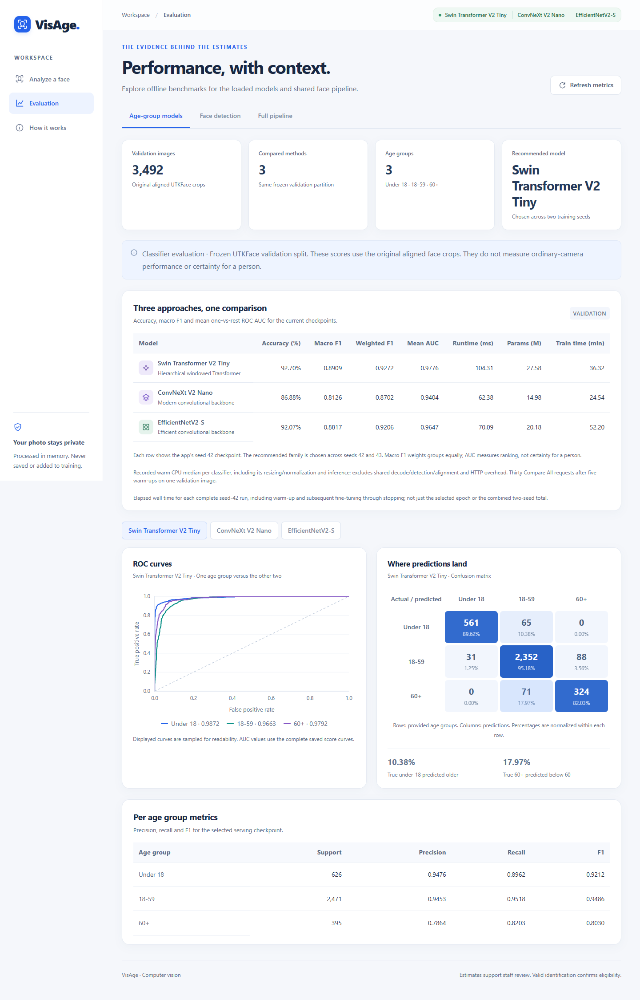

Age-group estimation from one selected face, with transparent model comparisons and evaluation evidence.
Three models, one shared face
Swin Transformer V2 Tiny is the validation-selected default. ConvNeXt V2 Nano and EfficientNetV2-S provide separate comparisons. Every result includes Under 18, 18–59 and 60+ model scores. Uploads and camera captures use the same detector, aligned face and API.
This GitHub Pages portal hosts documentation and results. The full inference system needs the Python backend; use the release package or the separately verified application deployment. GitHub Pages itself does not execute the classifiers.
Existing test benchmark
Serving model
Accuracy
Macro F1
Swin Transformer V2 Tiny
92.59%
0.8830
ConvNeXt V2 Nano
85.20%
0.7874
EfficientNetV2-S
92.07%
0.8728
3,493 existing UTKFace test crops. The default was selected from two-seed validation means; test results were not used for selection. These are age-group metrics, not identity recognition or real-camera accuracy.
Application workspace
Evaluation dashboard

Research photos and participant data are excluded from this public site. The independent pilot and further training were excluded by the user. Published model licenses and limitations remain applicable.